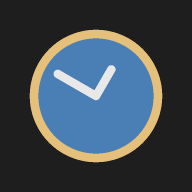

In the browser
Works on the phone too, and can be installed to the home screen for offline use. Timers are stored in that browser only — nothing is uploaded, and clearing site data deletes them. Alarms ring only while the page is open.

Track respawn windows for MvPs and quests. Write down the kill time and the window, and the row turns yellow when the spawn opens.
Runs in the browser. Timers stay on your device.
A kill at 13:12 with a declared respawn of 180–190 minutes becomes Spawn 16:12 and Max. Spawn 16:22. The row follows the window:
| Phase | Row | Left counts |
|---|---|---|
| Before Spawn | category colour | down to Spawn |
| Inside the window | yellow, it may be up | down to Max. Spawn |
| After Max. Spawn | red, missed | up, then stops |
Leave Max empty and the timer becomes a plain countdown. Nothing disappears on its own: timers stay until you remove them.
Works on the phone too, and can be installed to the home screen for offline use. Timers are stored in that browser only — nothing is uploaded, and clearing site data deletes them. Alarms ring only while the page is open.
A single folder, no installer, no dependencies. Alarms keep ringing in the background and the taskbar icon flashes. Timers live in a JSON file next to the executable.
Both use the same file format: export from one, import into the other.